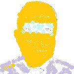

Staff & Leadership
Le Cabinet du Ministre s’attèle à l’exécution des missions diligentées par le Ministre dans l’orientation et l’exécution de la politique générale du Ministère. Il a par ailleurs pour mission : - d’instruire les dossiers et les traiter suivant les orientations du Ministre ; - De veilller à l’exécution et au suivi des décisions y afférentes ; - De mettre en oeuvre une politique d’information-communication efficace entre les institutions d’Enseignement Supérieur et de Recherches et le public en général. Le Directeur de Cabinet est responsable du fonctionnement de la coordination et de l’exécution du programme de travail de l’ensemble du Cabinet. Il est le collaborateur immédiat du Ministre, assure l’unité du Cabinet et donne à cet effet des directives.
Le Secrétaire Général seconde le Ministre dans l’exercice de ses attributions administratives et techniques. Il a pour mission d’assurer la coordination, l’animation, l’harmonisation et le suivi des activités de l’ensemble des directions générales, directions, services et organismes sous tutelle et rattachés au Ministère de l’Enseignement Supérieur et de la Recherche Scientifique. A ce titre, il est le Premier responsable de l’Administration du Ministère et a autorité sur les Directeurs Généraux, Directeurs, Présidents des Universités, Directeurs Généraux et Directeurs des Organismes sous tutelle et rattachés au Ministère. Il reçoit délégation pour signer au nom du Ministre tous les actes et correspondances relevant de ses attributions, à l’exclusion des actes réglementaires et administratifs engageant l’Etat.
Fanendrena araka ny Filankevitry ny minisitra ny 19 febroary 2020
La Direction Générale de l’Enseignement Supérieur assure l’élaboration et la mise en oeuvre du programme du ministère en matière d’Enseignement Supérieur.
Fanendrena araka ny Filankevitry ny minisitra ny 04 mars 2020
1 : Présidents des Universités
2 : Directeurs Généraux des Ist
3 : Directeurs des centres Nationaux de Recherches
4 : Directeurs des centres Nationaux de Formations
Staff & Leadership (suite)
La Direction Générale de la Recherche Scientifique, assure l’élaboration et la mise en œuvre de la politique et du programme du ministère en matière de Recherche Scientifique.
La Direction des Affaires Administratives et Financières assure la bonne marche des affaires administratives et financières du Ministère et la logistique des Directions et Services. Elle organise l’élaboration du budget du Ministère et en assure l’exécution budgétaire et le suivi des réalisations ; elle est responsable de la Gestion du Patrimoine du Ministère ; elle prépare la loi de règlement.
La Personne Responsable des Marchés Publics est rattachée au Ministre. Elle est la personne habilitée à signer les marchés de l’autorité contractante. Elle est chargée de conduire les procédures de passation des marchés depuis le choix de cette dernière jusqu’à la désignation du titulaire et l’approbation des marchés définis. Elle a rang de Directeur de Ministère.
Directeur des Bourses Nationales et Extérieures
xxxxxxxxx
La Direction des Bourses Nationales et Extérieures est chargée de la gestion, de l’octroi des bourses d’études tant nationales qu’extérieures ainsi que la coordination de la Commission Nationale des Bourses Extérieures (CONABEX).
La Direction de la Recherche et de l’Innovation est chargée de la mise en oeuvre du programme du Ministère en matière de recherche et de l’innovation.
Directeur d’Appui à la Réforme de l’Enseignement Supérieur et de la Recherche
M. RATSIMBASOA Arsène
La Direction d’Appui à la Réforme de l’Enseignement Supérieur et de la Recherche est chargée de l’élaboration et de la mise en oeuvre de la politique du Ministère dans le cadre de la transformation de l’enseignement supérieur et de la recherche.
Direction de la Statistique, de la Planification et du Suivi
M. RASOANAIVO Andry
La Direction de la Statistique, de la Planification et du Suivi a pour mission d’assurer la collecte et le traitement des données en appui à l’orientation et à la planification et à l’extension de l’enseignement supérieur et de la recherche.
La Direction des Techniques de l’Information et de la Communication assure la mise en oeuvre du programme du Ministère en matière d’application des nouvelles technologies de l’information et de la communication pour l’Enseignement Supérieur et la Recherche. Elle assure le développement du système d’information du Ministère de l’Enseignement Supérieur et de la Recherche ; Elle veille à la mise à la disposition des informations sur l’Enseignement Supérieur et la Recherche pour l’ensemble du public.
Directeur de l’Accréditation et de l’Assurance Qualité
M. RAKOTOZAFY Rivo
La Direction de l’Accréditation et de l’Assurance Qualité est chargée de la mise en oeuvre de la politique et du programme du Ministère en matière d’amélioration de la qualité de l’Enseignement Supérieur et de la promotion de la culture de la qualité. Elle organise notamment l’évaluation de la qualité des institutions publiques et privées d’enseignement supérieur, dans le but à terme d’établir un système d’enseignement supérieur qui réponde aux normes et qualités reconnues au niveau mondial.
Directeur du Développement et de la Coordination du Partenariat
xxxxxxxxxxxxxxxxxxxxxxxx
La Direction du Développement et de la Coordination du Partenariat est chargée du développement de la culture entrepreneuriale et de la promotion économique, à travers le transfert et l’exploitation des résultats de recherches et d’innovation par la communication et la vulgarisation.
Directeur des Ressources Humaines
Mme NIRY Nancy Vanina
La Direction des Ressources Humaines élabore et met en oeuvre la politique de gestion des Ressources Humaines du Ministère. Elle assure la gestion administrative des agents du Ministère. Elle veille à la gestion rationnelle des ressources humaines du Ministère.
La Direction de l’Enseignement Supérieur est chargée de la mise en oeuvre du programme du Ministère en matière d’Enseignement Supérieur.
PRESIDENTS DES UNIVERSITÉS
L’Université de Toliara est le plus ancien des centres d’enseignement supérieur décentralisés créés depuis 1971 pour le démembrement de l’Université de Madagascar.
En 1977, Création et construction des infrastructure du CUR (Campus Universitaire Régional) de Toamasina, localisé à Barikadimy. En 1979, Inauguration du Campus de Barikadimy.
Année universitaire 1977/1978, le Centre Universitaire Régional de Fianarantsoa commença effectivement à exister avec la Première année d’une filière Mathématiques et 126 Etudiants.
En 1977, l’École supérieure de chirurgie dentaire (ESCD) fut le premier Centre Universitaire Régional de la province de Mahajanga.
la Norvège a noué des collaborations de plusieurs décennies avec le milieu de la recherche à Madagascar, notamment en matière d’agriculture, par le biais de FIFAMANOR. Dans un souci de renforcement et de pérennisation de cette coopération, la Norvège s’engage à porter son soutien au MESupRES,
Créée en 1988, l’Université d’Antananarivo est l’organe principal de l’enseignement et de la recherche universitaires à Madagascar. Elle succède à l’Université de Madagascar, fondée en 1961, et dont le but était d’unifier toutes les facultés du pays en un seul établissement.
DIRECTEURS GENERAUX DES IST
En 1992, Installation à Ampasampito et recrutement des premiers IST-iens pour les 06 filières existantes, début des cours le 02 mai 1992.
Directeur Général de l’Institut Supérieur de Technologie d’Antsiranana (IST_Diégo)
Mme ZAKARIASY Lova
En 1989, Décret de création, Placé sous la tutelle technique et pédagogique du Ministère de l’Enseignement Supérieur et de la Recherche Scientifique, l’IST-D est un établissement public à caractère scientifique et culturel, doté de la personnalité morale et jouissant de l’autonomie administrative, pédagogique et financière.
Créé en 2010, ISTRAM (Institut Supérieur de Technologie Régional Amoron’i Mania) à l’époque, porte le nom de IST Ambositra actuellement.
DIRECTEURS DES CENTRES NATIONAUX DE RECHERCHES
Directeur Général de l’Institut Supérieur des Sciences et Techniques Nucléaires (INSTN)
M. RAJAOBELISON Joël
L’INSTN-Madagascar a une triple mission : Formation : dispenser des enseignements spécifiques aux sciences et techniques nucléaires au niveau des 1er, 2è et 3è cycles des Universités ; Recherche : coordonner et harmoniser tous programmes nationaux ou internationaux de recherches nécessitant l’utilisation pacifique des sciences et techniques nucléaires, et participer à leur élaboration et exécution. Actuellement, cette activité intègre de plus en plus la nanotechnologie ; Production : mettre son savoir-faire et les techniques en sa possession au service du public et des opérateurs économiques pour le développement économique du pays.
Directeur du Parc Botanique et Zoologique de Tsimbazaza (PBZT)
M. RAMAROMILANTO Boromé
Ses missions sont : constituer et entretenir des collections vivantes et mortes en vue de les faire connaître et de les protéger ; contribuer à la conservation et à la sauvegarde du patrimoine national ; contribuer à l’éducation et à l’information du grand public pour la protection des patrimoines national, naturel et culturel ; participer à la formation des enseignants, des étudiants et des élèves par les biais des stages d’études et de perfectionnement,
Pour plus d’information, veuillez contacter le +261 20 86 923 29 et l’adresse mail cnro_nosybe@yahoo.fr
Directeur Général du Foibem-pirenena momba ny Fikarohana ampiharina amin’ny Fampandrosoana ny eny Ambanivohitra (FOFIFA)
M. RAZAFINJARA Aimé Lala
Le FOFIFA a pour missions - Contribuer à l’élaboration de la politique nationale de recherche ; - Mettre en oeuvre la politique nationale de recherche en matière de développement rural et d’en assurer, la définition, la promotion, l’orientation, la coordination et la capitalisation de toutes les activités de recherche ; - Développer la recherche thématique de base, pour générer des connaissances et tehniques pour pouvoir anticiper les problèmes. - Mettre en oeuvre les documents de cadrage de la politique générale et des stratégies du Ministère de l’Agriculture ; - Appuyer et accompagner les actions de diffusion des résultats de recherche auprès des bénéficiaires cibles.
Le CNARP a deux missions principales : Participer à l’élaboration et à la mise en œuvre de la politique nationale en matière de recherche scientifique et technique, concernant les plantes médicinales (études ethnobotaniques et botaniques, chimiques, etc...) ainsi que la commercialisation et l’exploitation industrielles (commercialisation) desdites plantes et des formes pharmaceutiques et médicamenteuses qui en dérivent. Contribuer au rassemblement, au traitement et à la diffusion des informations scientifiques et techniques sur les plantes médicinales.
Directeur du Centre National de Recherche sur l’Environnement (CNRE)
M. MONG Yves Jean Michel
Le CNRE a pour mission : de se mettre en conformité et en phase avec les grands objectifs du pays en matière de recherche en fonction des orientations prioritaires ; de contribuer à l’élaboration de la politique nationale de la recherche sur l’environnement conformément à la politique de développement économique national dans le cadre de Programmes Intégrés de Recherche pour le Développement de contribuer à la mise en œuvre de la Stratégie Malgache de Conservation au service d’un développement durable.

Directeur du Centre National des Recherches Industrielles et Technologies (CNRIT)
xxxxxxxx
LE CNRIT a pour missions de : - Participer à l’élaboration et à la mise en œuvre de la politique nationale de recherches technologiques - Recherche de l’innovation - Valoriser les matières premières et les ressources locales - Développer les technologies endogènes et étrangères - Absorber et adapter les technologies étrangères - Valoriser et appliquer les résultats de recherches pour un développement durable - Encadrer, assister et appuyer les opérateurs de développement - Renforcer les capacités et les compétences régionales par la maîtrise des technologies propres - Gérer et protéger l’environnement (industriel, physique et social....).
Directeur du Centre d’Information et de Documentation Scientifique et Technique (CIDST)
xxxxxxxx
La mission du CIDST consiste à : Contribuer a l’élaboration et la mise en ouvre de la politique nationale de recherche sur l’information, la communication et la diffusion des connaissances ; Appuyer les acteurs du développement par une meilleure circulation de l’information en général et la diffusion de l’information scientifique et technique relative aux résultats de la recherche nationale et internationale ; Assurer une expertise scientifique en matiere d’authentification et de sécurisation de l’information ; Assurer des cycles de formation pour une meilleure gestion de l’information et pour le renforcement de capacité des professionnels.
L’IMVAVET a pour mission de contribuer à la mise en œuvre de la politique nationale en matière de recherche, de production et de commercialisation de vaccins vétérinaires et autres produits vétérinaires dont elle assure la fabrication afin de lutter contre les maladies du cheptel, de promouvoir les industries animales ainsi que la recherche appliquée pour le développement rural. A cet effet, Il est chargé de mettre au point, fabriquer et commercialiser des vaccins vétérinaires conformes aux normes internationales en vigueur ;
DIRECTEURS DES INSTITUTS ET CENTRES NATIONAUX DE FORMARTIONS
Directeur Général de l’Institut Supérieur des Sciences et Techniques Nucléaires (INSTN)
M. RAJAOBELISON Joël
Mission : Formation : dispenser des enseignements spécifiques aux sciences et techniques nucléaires au niveau des 1er, 2è et 3è cycles des Universités.
Le Centre National de Télé-Enseignement de Madagascar (CNTEMAD) est un établissement public à caractère scientifique, sous tutelle technique du MESupReS, œuvrant dans le domaine de l’enseignement supérieur, qui fut fondé, en 1992, suivant le décret 92-953 du 04/11/92, afin d’assister et d’accompagner, étroitement, l’administration des universités publiques malgaches dans leurs taches fondamentales, qui seraient : d’accueillir, de former, puis de valoriser les parcours (via les diplômes) de tout citoyen bachelier en quête de cursus universitaire.
Pr Elia Béatrice ASSOUMACOU
Ministre de l’Enseignement Supérieur et de la Recherche Scientifique
Dans le cadre de la Politique Générale de l’Etat et la réalisation des objectifs stratégiques énoncés dans l’Initiative Émergence Madagascar (IEM), le Ministre de l’Enseignement Supérieur et de la Recherche Scientifique met en oeuvre la Politique Générale de l’Etat en matière d’enseignement supérieur et de recherche. Il est notamment chargé de : - Faire de l’enseignement supérieur et de la recherche scientifique un réel moteur de développement de Madagascar ; - Assurer l’amélioration, l’efficacité de la gouvernance des Universités et garantir la paix sociale dans le monde Universitaire ; - Instaurer d’une manière pérenne un enseignement supérieur de qualité et compétitif, par l’optimisation et la propagation de l’application du système LMD, du système d’accréditation, et d’assurance qualité ; - De promouvoir des formations professionnalisantes, au sein des facultés, écoles, instituts, et divers sites à hautes potentialités économiques ; - D’assurer un meilleur environnement pour les études, les formations et les recherches ; - Prioriser les thématiques de recherches et de l’innovation ; - Valoriser les produits de la recherche scientifique par la création d’une stratégie entrepreneuriale (Promotion de l’Economie), afin de réaliser à son meilleur niveau l’exploitation des produits issu de cette recherche ; - Systématiser cette option d’investissements pour les résultats de recherche afin qu’elle devienne une réelle source régénératrice de ressources financières ; - De coordonner et de contrôler les activités des organismes et institutions qui lui sont rattachés.